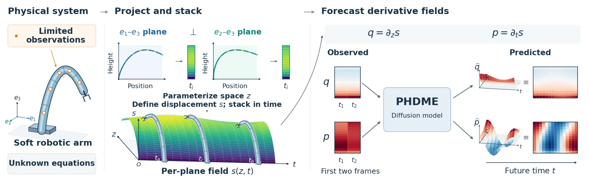
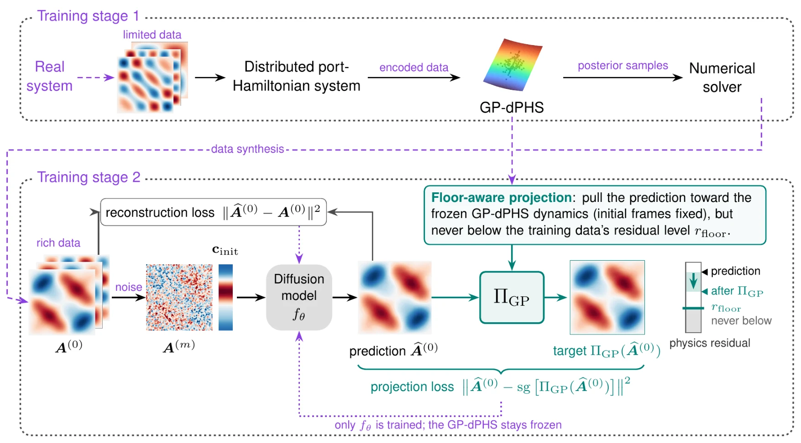
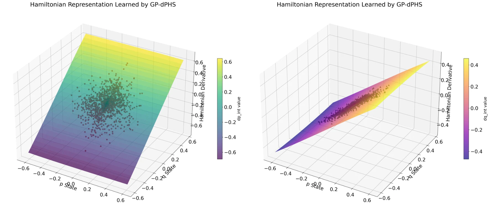
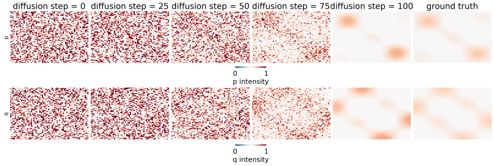
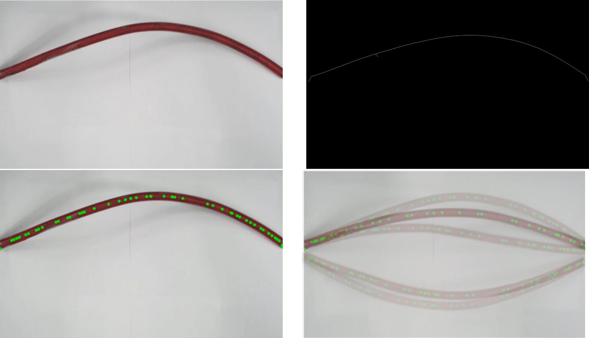
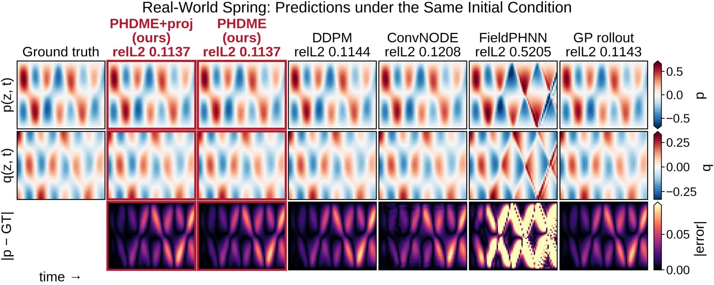
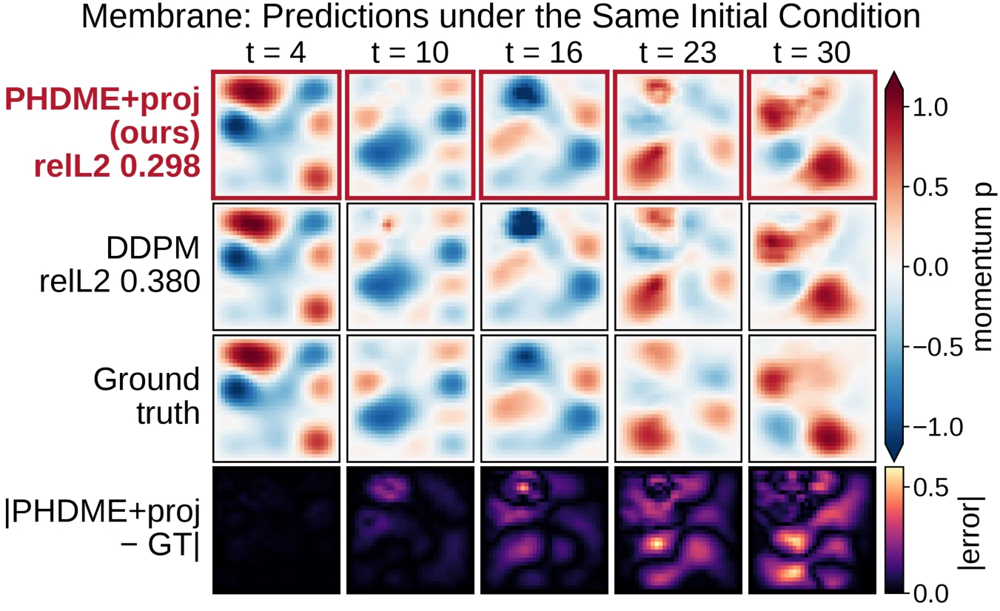
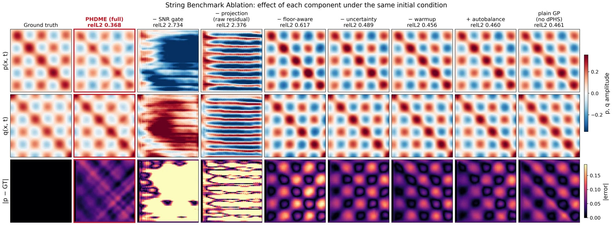

Data are scarce
Generative models need many trajectories to learn a distribution. Fully instrumenting a soft robot with sensors is expensive and physically difficult, so in practice we may only have a few recordings.
Physics-informed diffusion / Robot dynamics
A Port-Hamiltonian Diffusion Model that learns physical structure from a handful of trajectories, then uses it to make diffusion forecasts of soft-robot dynamics accurate and physically reliable.
Paper under double-blind review
Motivation
Diffusion and flow-matching models forecast complex dynamics well, but they learn the data distribution from lots of data and know nothing about the physics that produced it. For a soft robot, both are a problem.
Generative models need many trajectories to learn a distribution. Fully instrumenting a soft robot with sensors is expensive and physically difficult, so in practice we may only have a few recordings.
Even with enough data, a purely data-driven model can match dataset statistics while violating physical laws, e.g. letting a fixed base drift. That is unacceptable for safety-critical soft robots.
Physics-informed methods (PINNs, physics-informed diffusion) assume the governing PDE is known. For soft robots, deriving first-principles equations from a few video frames is often impossible.

Method
PHDME assumes only the structure of the system, namely that it is a distributed port-Hamiltonian system (dPHS). The energy function (Hamiltonian) and the unknown coefficients are learned from data.
J power-preserving interconnection · R dissipation · Gd input map · 𝓗 unknown Hamiltonian, modeled by a Gaussian process

Stage 1 · Physics prior
A smooth GP interpolant of the sparse measurements provides state derivatives in closed form. A Gaussian process is placed on the Hamiltonian, and because GPs are closed under linear operators this induces a GP over the dynamics with a physics-informed kernel:
Training maximizes the marginal likelihood. The result is a Bayesian physics prior that carries a mean and an uncertainty for every predicted state rate.
Stage 1 · Data enhancement
Rather than rolling out only the posterior mean, PHDME draws Hamiltonian gradients from the GP-dPHS posterior. Each draw is one plausible dynamical system, which a numerical solver integrates under new initial conditions. The augmented dataset reflects both physics uncertainty and initial-condition variety, enough to train a diffusion model from just 20 real trajectories.
Stage 2 · Uncertainty-weighted physics
For a denoised prediction , the learned residual compares its finite-difference time derivative with the rate the GP-dPHS predicts. The GP variance turns into a weight , so mismatches count more where the prior is certain and less where it is not:
Stage 2 · Floor-aware projection
A damped Gauss–Newton / conjugate-gradient solve finds a nearby trajectory that better obeys the learned dynamics, keeping initial and boundary values pinned. It stops once the residual reaches , the level that real observed trajectories attain, so the model never over-fits an imperfect operator.
The GP-dPHS stays frozen; only the denoiser is trained. At test time an optional single projection (+proj) can further tighten physical consistency.


Benchmarks
On every benchmark the GP-dPHS is fitted to only 20 ground-truth trajectories. All learned models (PHDME and baselines) train on the same GP-augmented data and are tested on held-out true trajectories. Analytic equations are used only for evaluation.
Synthetic · 1D
Fixed-end wave equation in port-Hamiltonian form, with state . Observations downsampled 50× to 1,639 rows. Tested on 1,000 held-out trajectories.
Synthetic · 2D nonlinear
A 2D Stokes–Dirac drum with saturating (tanh) co-energy on a 32×32×32 space–time grid. Separable isotropic GP Hamiltonian, 200 observation rows per gradient component. 500 test trajectories.
Real world
A 41.9 cm extension spring with fixed ends, a stand-in for swinging cables or a soft robot arm. Filmed at 226 FPS; no closed-form equations exist. 250 test trajectories.

Results
Lower is better, except for spring E-cons, which should match the ground-truth value 0.527 for the damped spring. Hover a bar for exact values.
vs. DDPM on the string: relL2 drops 0.637 → 0.413, and oracle-phys drops 0.574 → 0.183 (0.121 with +proj). Same network, data, and sampler; the only difference is the learned-physics loss.
Lower analytic residual than GP rollout on the membrane (0.106 vs 0.423). Integrating the GP prior directly is accurate but less physical on true states.
Energy behavior on the real spring matches the ground-truth 0.527, while FieldPHNN keeps too much energy (0.386) and has 5× the error.


Baselines trained directly on the original limited observations, without the PHDME pipeline (string benchmark):
| Training data | Model | relL2 | oracle-phys | MSE |
|---|---|---|---|---|
| GP-augmented | PHDME +proj (ours) | 0.397 | 0.121 | 1.47×10⁻³ |
| GP-augmented | PHDME (ours) | 0.413 | 0.183 | 1.58×10⁻³ |
| 1,639 points | FieldPHNN | 0.535 | 4.61×10² | 1.24×10⁻¹ |
| 12 frame pairs | ConvNODE | 0.422 | 1.649 | 3.62×10⁻³ |
| 1 trajectory | DDPM | 2.297 | 2.002 | 4.36×10⁻² |
One reverse-diffusion chain generates the whole trajectory, so PHDME amortizes the expensive GP-dPHS solve.
Seconds per sample. 10,000 samples: 11 h 23 min vs 33 min.
Leave-one-out ablation on the string (relL2 after +proj, lower is better).
| Full PHDME | 0.410 |
| − learned physics (DDPM) | 0.670 |
| Projection → raw residual loss | 1.115 |
| − floor-aware stopping | 0.900 |
| − GP-variance whitening | 0.623 |
| − SNR gate | 3.072 |
| − data-only warm-up | 0.606 |
| Fixed weight → GradNorm | 0.541 |

Citation
@article{anonymous2026phdme,
title = {PHDME: Physics-Informed Diffusion Models without Explicit Governing Equations},
author = {Anonymous},
journal = {Under review},
year = {2026}
}